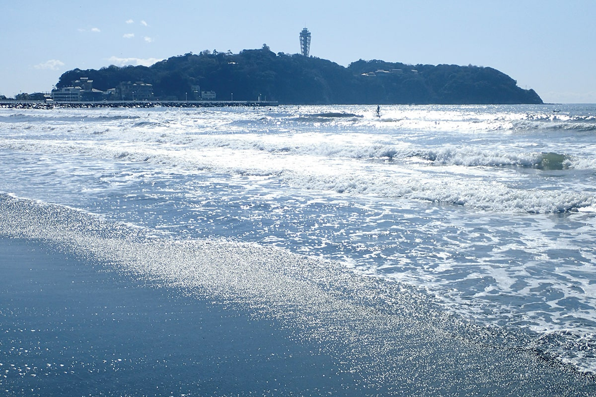
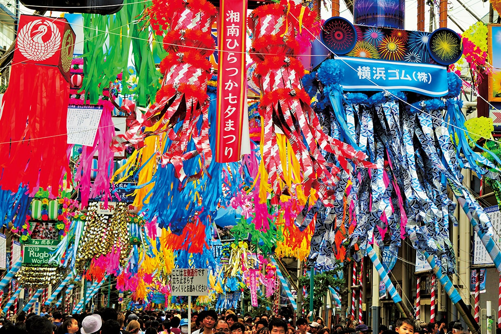
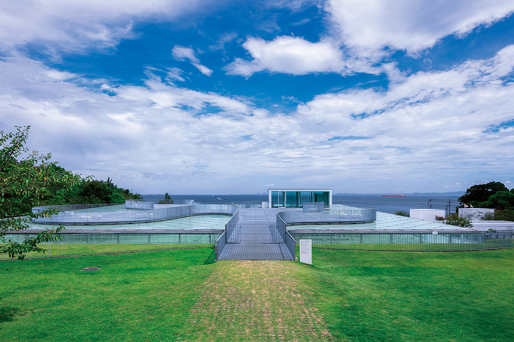
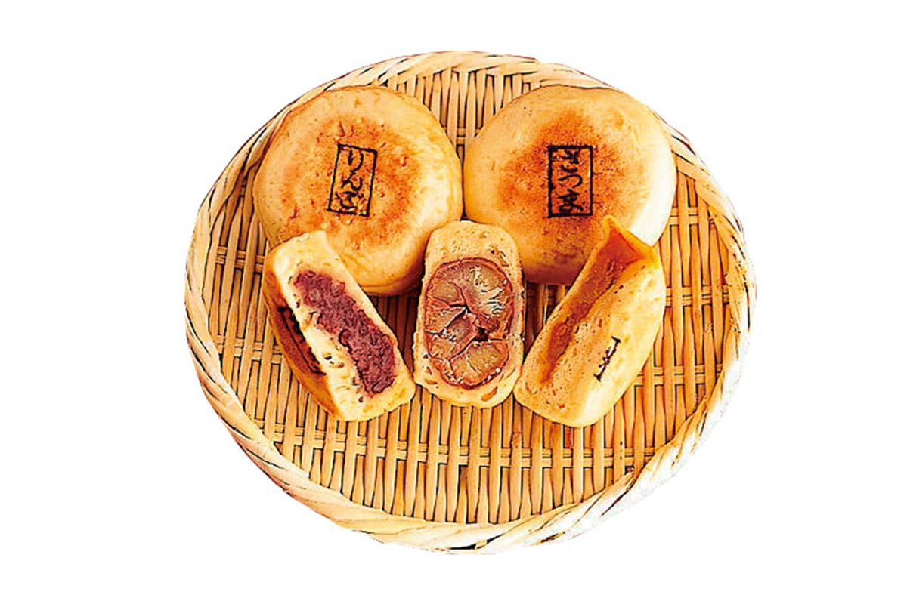
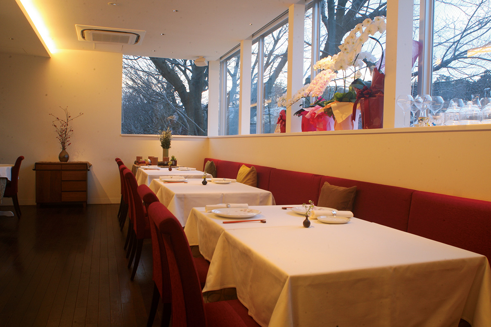
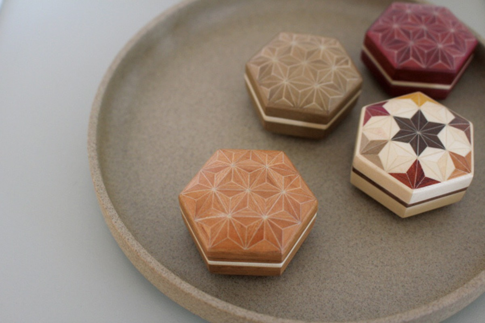
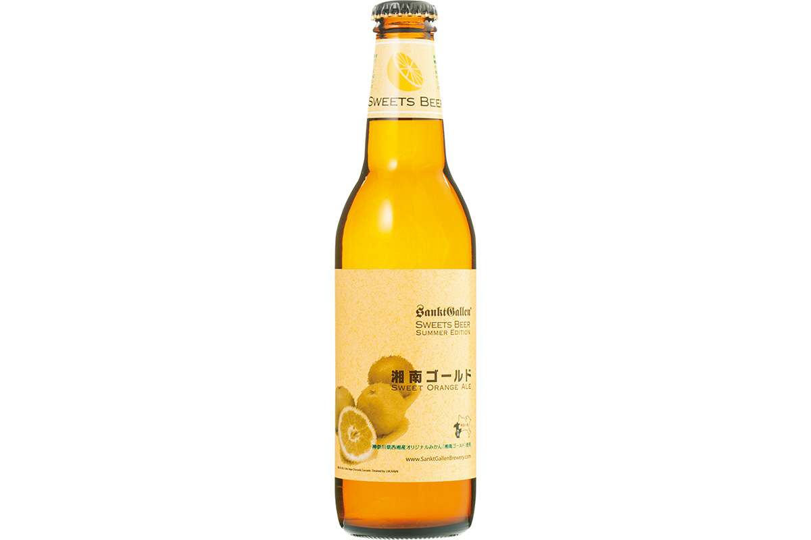
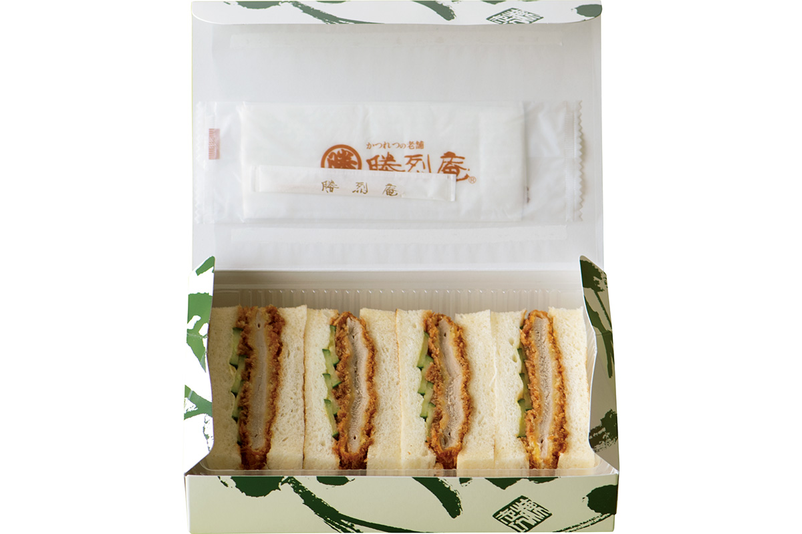
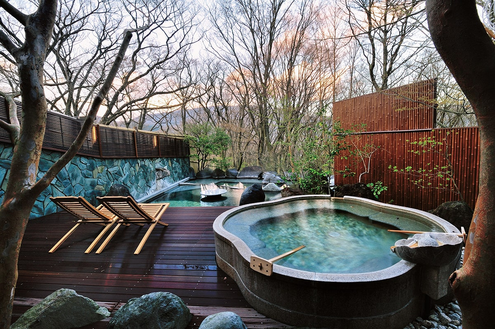

Префектура Канагава
Канагава: морской берег Эносимы, Хаконэ и первая столица воинов

Волны идут к песчаному берегу, в дымке видны зелёный остров и красные постройки среди деревьев.
Здесь стоит город с самым большим населением страны, рядом с ним лежат пляжи Сёнана, а в горах пар поднимается над горячими источниками. Рассказываем, за чем ехать в Канагаву.
О префектуре
Здесь началась власть воинов
В городе Иокогама живёт 3,7 миллиона человек, и по населению он уступает только двадцати трём районам Токио, но обгоняет Осаку. Всего же в префектуре три города государственного значения, Иокогама, Кавасаки и Сагамихара, и это больше, чем в любой другой префектуре страны. При этом рядом лежат Камакура, Хаконэ и Сёнан, то есть известнейшие места отдыха.
Если копнуть историю, то уже в середине эпохи Хэйан здесь grew слой землевладельцев, которые постепенно становились воинами. К 1192 году Минамото-но Ёритомо открыл в Камакуре своё управление, то есть первую в стране военную власть, бакуфу. Много позже, в конце эпохи Эдо, приход кораблей Перри положил конец закрытости страны, и Иокогама стала одним из портов, через которые страна общалась с иностранцами: именно сюда западные вещи попали раньше всего. Само название Канагава идёт от места, где при открытии порта поставили управу, которая следила за делами с иностранцами.
В первый год правления Рэйва, то есть в 2019 году, тайфун номер девятнадцать сильно ударил по Хаконэ. Сейчас гостиницы и источники вернулись к обычной работе, остаётся только восстановление горной железной дороги Хаконэ-тодзан-тэцудо: её планируют открыть на всём протяжении 23 июля. В горах тут стоит 36 горячих источников, а сама дорога по склону это отдельная местная достопримечательность.
Что посмотреть
Остров, к которому ведёт мост
Эносима
Небольшой остров длиной около четырёх километров в окружности лежит прямо у берега Сёнана, и с сушей его соединяют мост Эносима-охаси и мост Бэнтэн-баси. Здесь стоят святилище Эносима-дзиндзя, пляжи и банный комплекс, поэтому остров считается главным местом отдыха всего Сёнана.
- Справки
- туристическая ассоциация города Фудзисава
- Телефон
- +81 466-22-4141
Что ещё посмотреть
- Озеро Аси, озеро в кратере у подножия горы Хаконэ
- Овакудани, долина, где из камней поднимается серный пар
- Святилище Цуругаока Хатимангу, главное святилище Камакуры
Праздники
Улицы, завешанные бумажными украшениями
Праздник Танабата в Хирацуке
Своё начало этот праздник берёт в 1950 году, когда город Хирацука устроил его после войны как знак восстановления. Теперь это один из самых известных праздников Танабата в стране: улицы плотно закрывают большие украшения, и по ним идут шествия.

- Период
- начало июля
- Место
- улицы города Хирацука, префектура Канагава
Другие праздники
- Шествие даймё в Хаконэ, осенний парад в костюмах эпохи
- Праздник Кибунэ, летнее шествие с лодками у моря
- Большой обряд святилища Цуругаока Хатимангу, главный праздник святилища в Камакуре
Музеи и архитектура
Круглые окна в потолке над морем
Художественный музей Иокосуки
Музей стоит там, где сходятся зелень парка Каннондзаки и синяя вода Токийского залива, и здание построили так, чтобы это место было видно изнутри: в потолке и стенах сделаны круглые отверстия разного размера, поэтому свет и вид на воду входят в залы свободно.

- Адрес
- 4-1 Kamoi, Yokosuka, Kanagawa
- Телефон
- +81 46-845-1211
- Сайт
- yokosuka-moa.jp
Что ещё посмотреть
- Праздник гортензий в Кайдзуке, летний праздник у воды
- Фонари на Эносиме, вечерняя подсветка на острове
- Праздник Мондже в Сагами-Оно, уличный праздник с едой и музыкой
Местная кухня
Лепёшка с начинкой из сезонных трав
Канкояки
Это простое угощение с давних пор готовят в районе Цукуи города Сагамихара. Жидкое тесто из пшеничной муки раскатывают тонко, заворачивают в него весенние горные травы или осенние грибы, а потом запекают на горячей плите. Получается плотная лепёшка, которую здесь едят и как перекус, и как домашнее лакомство.

Что ещё попробовать
- Дон с сирасу, миска риса с мелкой белой рыбой
- Суп Кэнтё, густой суп с овощами из храмовой кухни
- Данго хэра-хэра, мягкие рисовые лепёшки
Где поесть
Французская кухня из местных продуктов
«Петаль де Сакура»
Здесь готовит владелец и шеф Нанба Хидэюки, который работал в нескольких ресторанах со звёздами. В меню французская кухня с добавлением лекарственных трав, и шеф старается брать продукты у местных хозяйств: такое совпадение сезона и края здесь считают главным делом ресторана.

- Адрес
- 5-2 Yayoidai, Izumi, Yokohama, Kanagawa
- Телефон
- +81 45-443-5876
- Часы
- с 11:30 до 15:00 и с 18:00 до 22:00
- Выходные
- понедельник
Ремёсла
Шкатулка, собранная из кусочков разных пород
Мозаика ёсэги из Хаконэ
Этот промысел идёт с эпохи Эдо: тонкие пластины разных пород дерева складывают вместе и склеивают так, что получается узор, а потом из этого полотна делают шкатулки и мелкие коробочки. Современные мастера делают вещи для обычного дома, поэтому рисунок бывает и простым, и совсем мелким.

- Телефон
- +81 460-83-6222
- Сайт
- e-yosegi.jp
Что привезти
Пиво с местным апельсином и сэндвич с котлетой
Пиво «Сёнан голд» завода Санкт-Галлен
Завод Санкт-Галлен известен сезонным пивом на местных фруктах, и «Сёнан голд» варят с апельсином, который выращен в самой префектуре. Бутылка 330 миллилитров стоит 506 иен, а продают это пиво только до конца сентября.

- Телефон
- +81 46-224-2317
Сэндвич с котлетой от «Кацурэцу-ан»
Эта лавка работает с 1927 года, и её сэндвич с котлетой здесь считают своим, иокогамским. Сэндвич делают на заказ и продают с собой; в главном доме на улице Басёдо он стоит 1188 иен.

- Справки
- главный дом «Кацурэцу-ан» на улице Басёдо
- Телефон
- +81 45-681-4411
Где остановиться
Купель под открытым небом в каждом номере
Гора Ханаоги «Энка-но мори»
Это гостиница в Хаконэ, где в каждом номере есть своя купель под открытым небом, и вода идёт прямо из источника этого дома, без подогрева и без добавок. На ужин подают парадный набор: рыбу и моллюсков из залива Сагами, овощи из Асигары и отобранную говядину из Хиды.

- Адрес
- 1320-862 Gora, Hakone, Ashigarakami, Kanagawa
- Телефон
- +81 460-82-4100
- Комнат
- 20
- Цена
- от 43 000 иен за ночь с двумя приёмами пищи, налоги и сбор включены
Местный диалект
Как здесь говорят «очень вкусно»
- суггээ умээ бээочень вкусно
- ёкоири сундзя нээ ёне лезь без очереди
- гоми о уттярэвыброси мусор
- иэ-но нака дэ абакурэнане носится по дому
Рекорды
В чём Канагава первая
- №1 производство вина: первое место в стране
- №1 потребление сюмай, то есть паровых пельменей: первое место
- №1 время, которое люди тратят на дорогу до работы: первое место
Вопросы и ответы
Что ещё спрашивают о Канагаве
У какой железной дороги от начала до конца всего десять километров?
У линии Эносима-дэнтэцу. Она соединяет Фудзисаву и Камакуру вдоль берега Сёнана, и её зовут коротко «Энодэн». Дорога идёт всего десять километров, но пейзаж вдоль моря сам по себе считается картиной, поэтому линию знают далеко за пределами префектуры.
Какое блюдо придумали в Иокосуке, чтобы пополнять силы?
Рис с карри. Его восстановили по старинной книге о флотской кухне эпохи Мэйдзи, и теперь местные зовут это блюдо «иокосука кайгун карри». По правилам заведения к нему обязательно подают салат и молоко.
Справочник
Канагава в цифрах
Общие сведения
| Административный центр | Иокогама |
| Муниципалитеты | 19 городов, 13 посёлков, 1 деревня |
| Площадь | 2416 кв. км |
| Население | 9,18 млн человек |
| Плотность населения | 3798,2 человека на кв. км |
| Туристов в год | 49,11 млн |
| Дерево префектуры | гинкго |
| Цветок префектуры | лилия ямаюри |
| Птица префектуры | чайка |
Климат
| Средняя температура | +17,1 |
| Максимум | +32,2 |
| Минимум | +2,1 |
| Осадки | 1574 мм |
| Ясных дней | 34 |
| Дождливых дней | 104 |
| Снежных дней | 6 |
Для путешественника
| Онсэнов | 36 |
| Гостиниц и рёканов | 582 |
| Музеев искусств | 38 |
| Музеев | 39 |
| Митиноэки, придорожных станций | 3 |
| Национальное сокровище | портрет Ходзё Санэтоки на шёлке из храма Сёмё-дзи |
| Важных культурных ценностей | 342, из них 18 национальных сокровищ |
| Исторических мест | 25 |
| Живописных мест | 3 |
| Природных памятников | 63 |
| Национальные парки | Фудзи-Хаконэ-Идзу, Тандзава-Ояма, всего 2 |
Природные памятники
- Актиния умэбоси, редкое морское животное здешних вод
- Старые опоры моста через Сагами, остатки деревянного моста в русле
- Сосна у храма Дзёган-дзи, большое старое дерево
- Рододендрон в Хаякаве, редкий кустарник у воды